同一组四张源画，用完整岸体的源像素、等比变换与接触轮廓共同产生碰撞和画面；没有把整屏概念图烘焙为背景，也没有为第二布局重画图片。独审给予有限内部准入，不代表用户最终画风、商业品质或完整随机区域已获认可。
本页只有真实Godot正常镜头和明确标注的正常录像抽帧。旧新方案重设了几何与镜头，不能作像素同位前后比较。完整播放、实际听音、真人和设备验证均未完成。
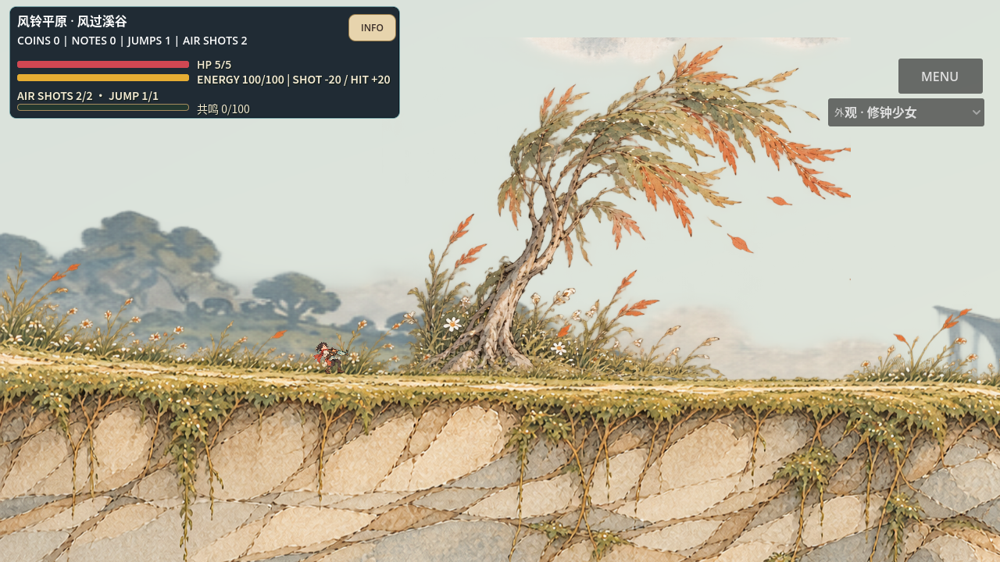
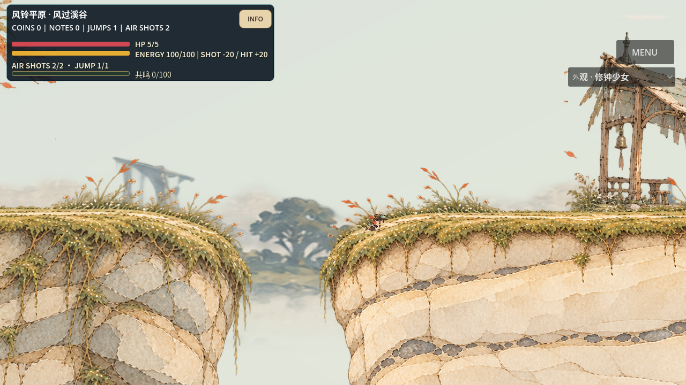
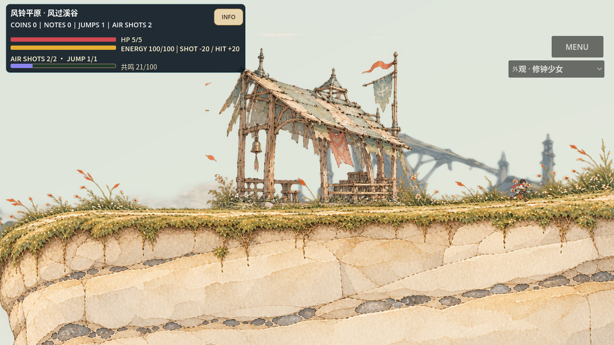
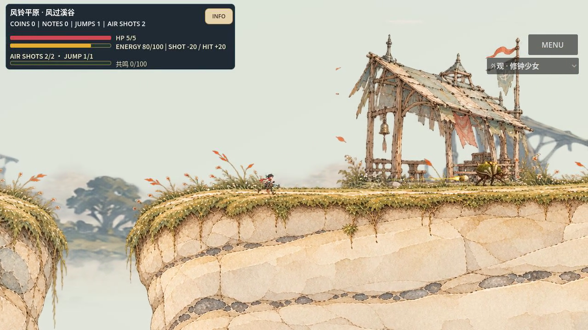
两岸相对高差从0变为120；主路线先下溪床再攀岸，区别于第一构造的上缘跨越。它是第二个显式注册布局，不是多个随机Seed的品质证明。
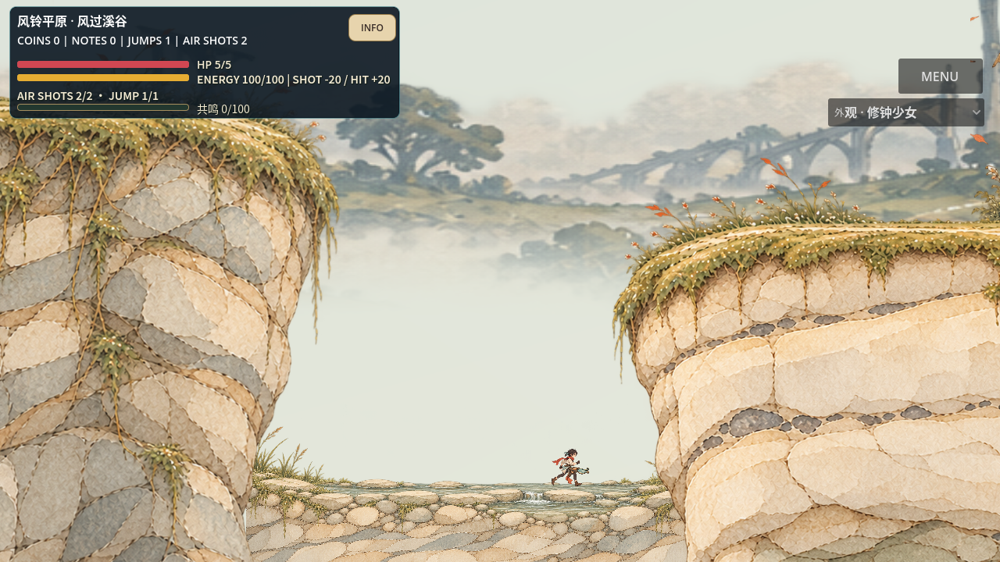
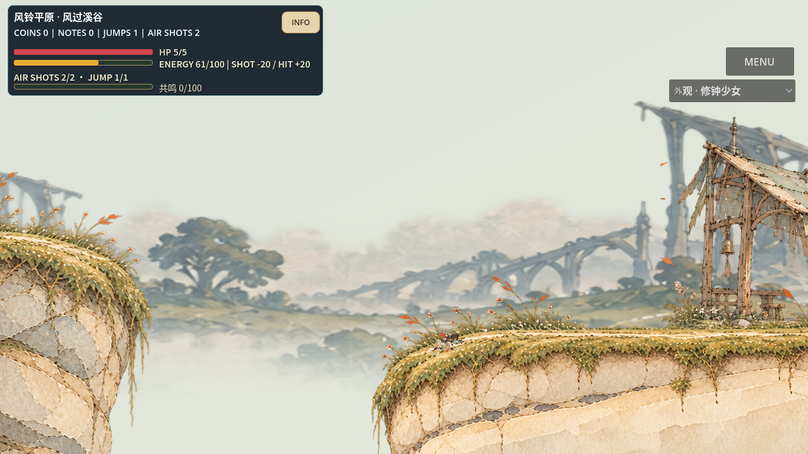
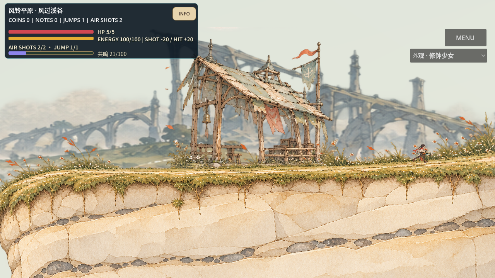
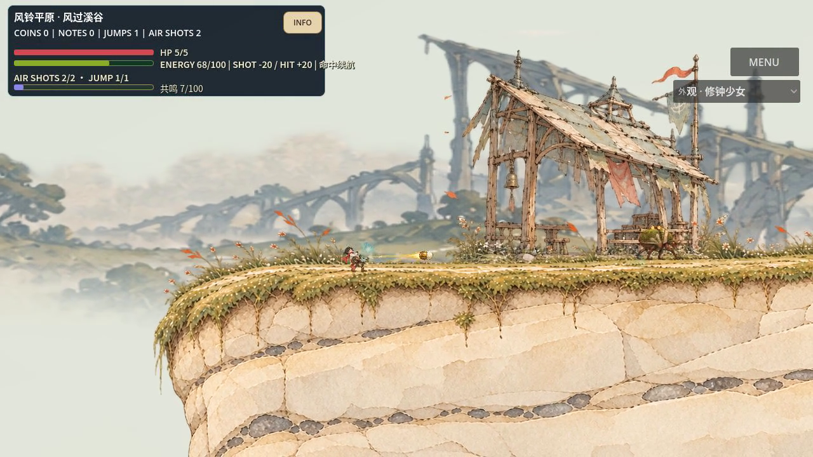
下列是体积较小的评审转码副本；1280×720、60fps、原帧数/时长与48kHz双声道已逐一核对。原片未改，原片与副本SHA均在记录索引。
| 实机路线 | 实际观测 | 范围 |
|---|---|---|
| 第一构造 main | 1003 tick、9点、3次正常战斗射击接受、HP5/5 | 97703a8f，17.2秒正常片 |
| 第二构造 main | 1347 tick、11点、9次射击接受、HP5/5 | ba787df7，22.966667秒正常片 |
| 工程 | 第一124、第二138、原模块1310项通过 | 不替代艺术、用户、设备或正式CI验收 |
这些负例保持原始像素与原版本，不因为后续修复改标。v3源画法仍经过角色层级、相机对未连接接口的约束修正；未连接接口没有冒充已连接世界。
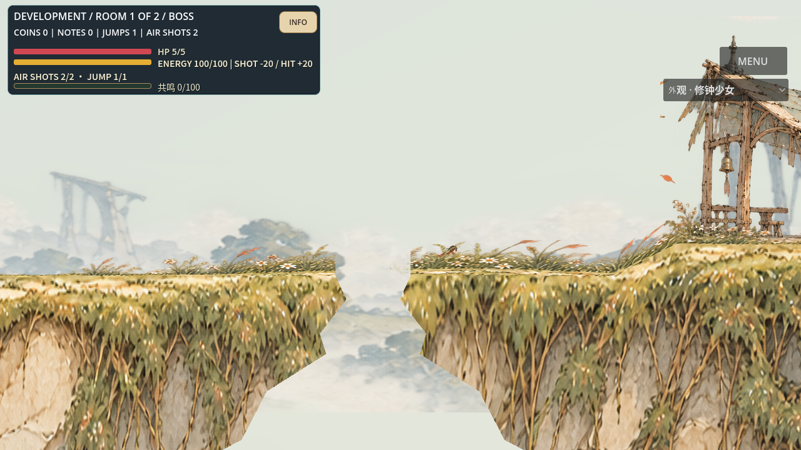
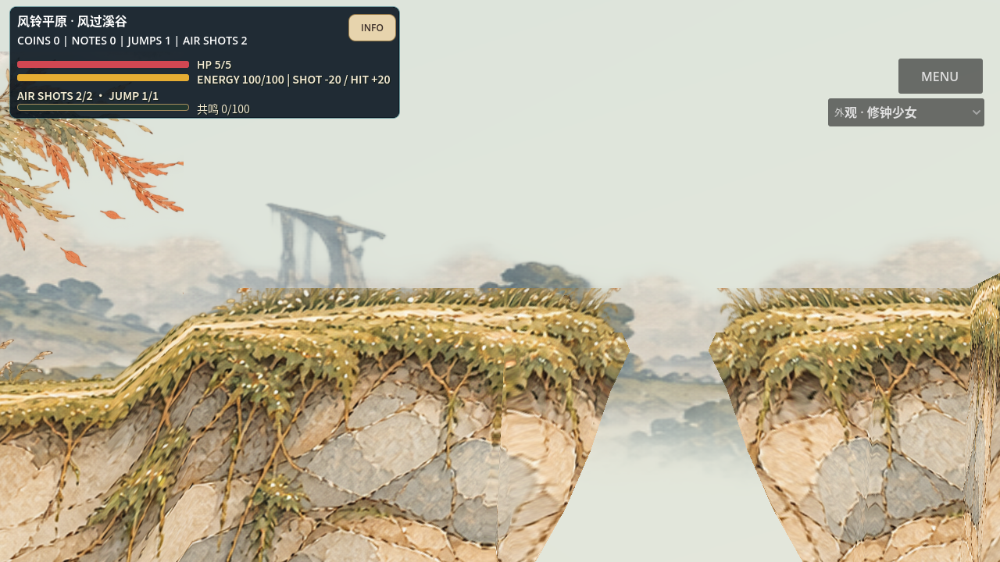
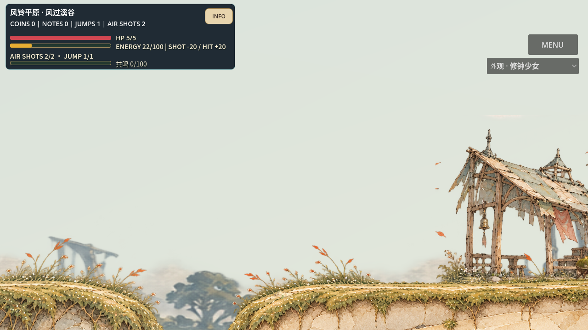
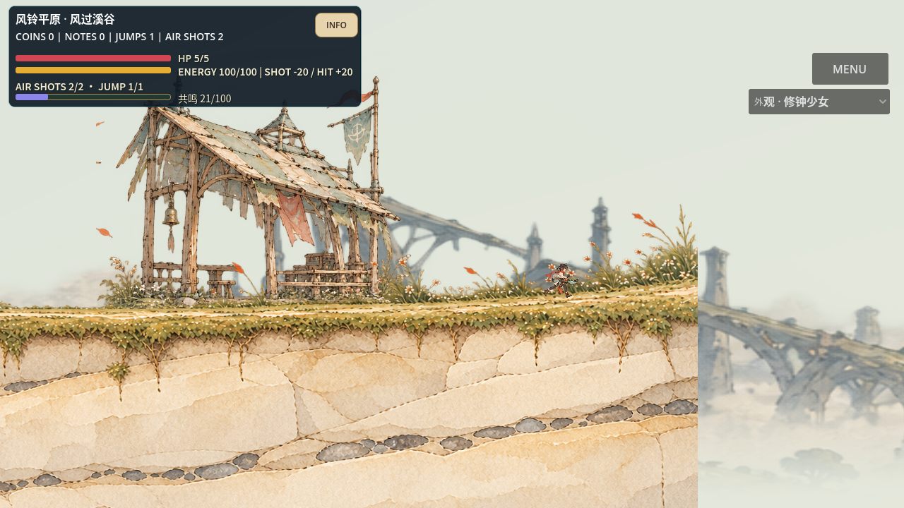
完整索引：每轮状态、实际耗时、记录到的版本、源指纹、原件gzip与SHA · 第一构造独审 · 第二构造独审
原始失败、JSON数值复现、入口安全查询、源图/碰撞绑定和1310回归原日志均可从索引恢复。尚未验证完整区域拓扑、跨模块外延连接、随机Seed总体品质、真人手感、实体设备性能或市场认可。